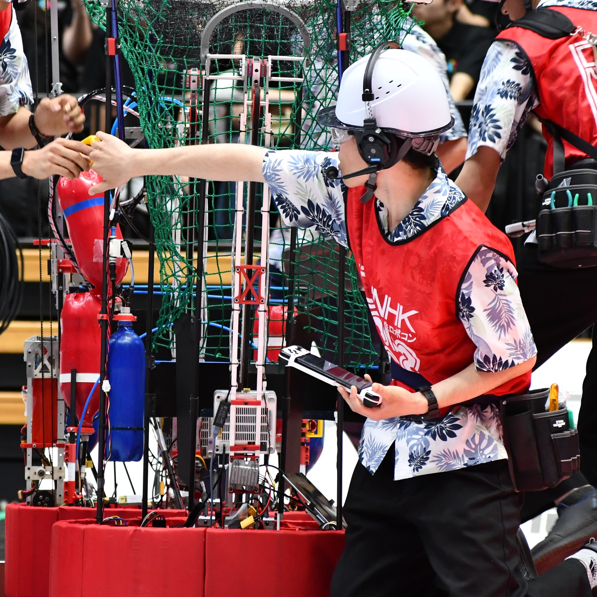

東京農工大学 工学部 知能情報システム工学科 学部4年
中学生の頃、ロボカップに参加したことがきっかけでものづくりが好きになりました。高専に進学後はロボット研究同好会に所属し、高専ロボコンに出場。新型コロナウイルスの影響で活動が制限される中、ロボットの制御プログラム作成や回路作成に注力しました。
大学編入後はロボット研究会に所属し、NHK学生ロボコンでの優勝を目指した機体開発に参加。現在は大学の研究室で深層学習や画像処理の研究を行う傍ら、次なるロボコンに向けた開発も継続しています。
主にロボット内に搭載されている回路の設計製作
EtherCATを用いたロボット内通信システムの開発、基板のファームウェア開発、ROS2での対基板通信部分などを担当した。
深度カメラを搭載したロボットの制御を行った。
深度カメラを用いて飛んでくるボールの検出・ボールをキャッチできる場所への移動などのプログラムを作成した。
動画は正面に立っている人を認識して追尾している様子。
SBCと深度カメラを搭載したオムニホイールロボットの設計製作を行った。